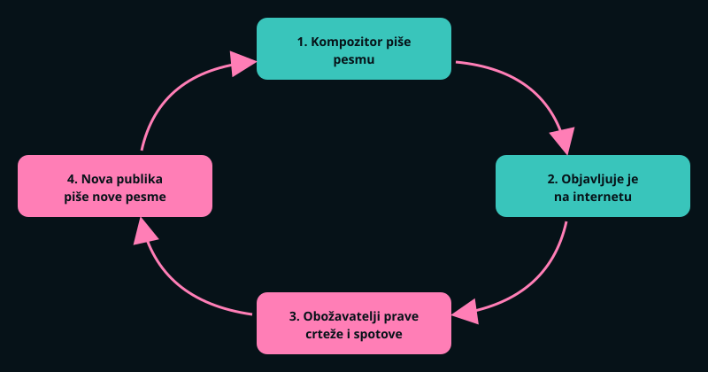

GLAVNA IDEJA
Hatsune Miku nije postala poznata zato što je neko vodio veliku reklamnu kampanju oko jedne pevačice. Postala je poznata zato što su obični ljudi dobili alat da sami pišu pesme, a ona je bila glas koji sve te pesme peva. Što je više pesama nastajalo, to je više ljudi saznavalo za nju.

ZAŠTO JE BAŠ ONA USPELA?
- Pristupačnost. Svako ko kupi program može da komponuje pesmu i bez pevača i bez studija.
- Internet. Pesme su objavljivane na japanskim sajtovima za video, gde ih je odmah videlo mnogo ljudi.
- Lik. Dobila je jasan izgled i ime, pa su je ljudi lako prepoznavali i crtali.
- Sloboda korišćenja. Obožavatelji su smeli da crtaju, animiraju i prave igre sa njenim likom, uz određena pravila.
- Koncerti. Nastupa na pozornici kao projektovani lik, uz živi bend i publiku sa svetlećim štapićima.
HRONOLOGIJA
| Godina | Događaj |
|---|---|
| 2004. | Pojavljuje se tehnologija Vocaloid za sintezu pevanja |
| 2007. | Izlazi Hatsune Miku (31. avgust); prve pesme obožavatelja brzo se šire internetom |
| 2008–2010. | Raste broj pesama, crteža i animacija koje prave obožavatelji |
| 2009–2011. | Prvi koncerti u Japanu, a zatim i nastup u Sjedinjenim Državama |
| 2014. | Nastupa kao predgrupa na turneji pevačice Lejdi Gage i pojavljuje se u američkoj televizijskoj emisiji |
| Kasnije | Izlaze nove verzije glasa, a koncerti se održavaju širom sveta |
ZANIMLJIVOSTI
Na koncertima Miku nije pravi hologram, već lik projektovan na providno platno. Publika ipak reaguje kao da gleda pravu zvezdu: aplaudira, navija i peva zajedno sa njom.
ZAKLJUČAK
Hatsune Miku je primer kako tehnologija i zajednica zajedno mogu da naprave muzičku zvezdu. Program daje glas, a ljudi daju pesme, slike i priču. Bez njih ona bi bila samo softver.